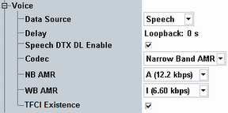

The voice section configures the voice channel. The settings take effect when a UE originated or UE terminated voice channel connection is established.
During a multi-call, DPCH slot format (spreading factor, pilot bits) is configured dynamically depending on the connection configuration. If packet data end-to-end connection is disabled during a voice call, spreading factor and pilot bits are configured at value of 128 and 8 respectively.
This section is not relevant for reduced signaling.

Selects the voice connection path. This parameter is configurable also during a call.
- Loopback: the received voice stream is looped back to the UE after the configurable "Delay".
- Speech: setup for the bidirectional audio connection from the speech encoder/decoder to the DUT involving the audio measurements application with the codec board.
This parameter is only available with the speech codec board.
For general prerequisites, required options and background information see "Audio Measurements".
Defines the time that the R&S CMW waits before it loops back the received data if the "Data Source" = "Loopback".
The actual time delays measured are displayed in the main view, see "CMW Voice Info".
Remote command:Enables/disables the speech DTX indication in downlink. The speech encoder of the R&S CMW indicates no speech activity via layer 1. Then, comfort noise is not being transmitted via speech packets, but the UE generates comfort noise itself. This parameter is only available if the "Data Source" = "Speech".
Remote command:Displays the adaptive multi-rate (AMR) voice codec type to be used. This parameter is configurable also during the call.
Remote command:Specifies the mode of the narrowband AMR codec. This parameter is configurable also during the call.
The basic modes support one fixed bit-rate. Mode M supports several bit-rates.
If one of the fixed bit-rates is selected, this bit-rate is used in uplink and downlink. If mode M is selected, the instrument and the UE can select one of the supported bit-rates.
Remote command:Selects the mode of the wideband AMR codec. The basic modes support one fixed bit-rate. Multi-rate modes starting with M support several bit-rates.
If one of the fixed bit-rates is selected, this bit-rate is used in uplink and downlink. If multi-rate mode is selected, the instrument and the UE can select one of the supported bit-rates.
This parameter is configurable also during the call.
Remote command:Enables/disables the downlink signaling of TFCI for voice connections.
Option R&S CMW-KS410 is required.
Remote command: